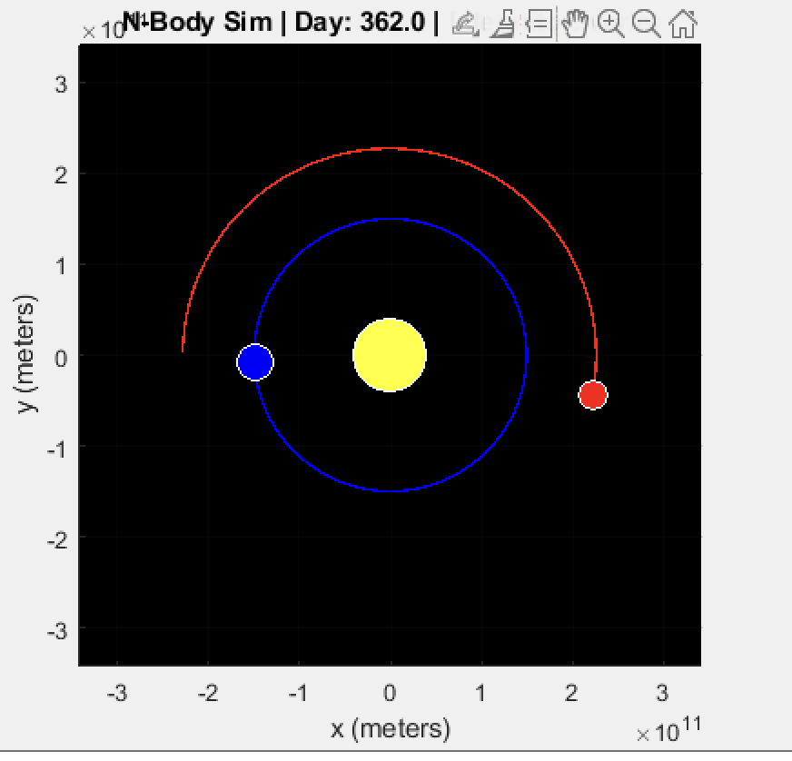
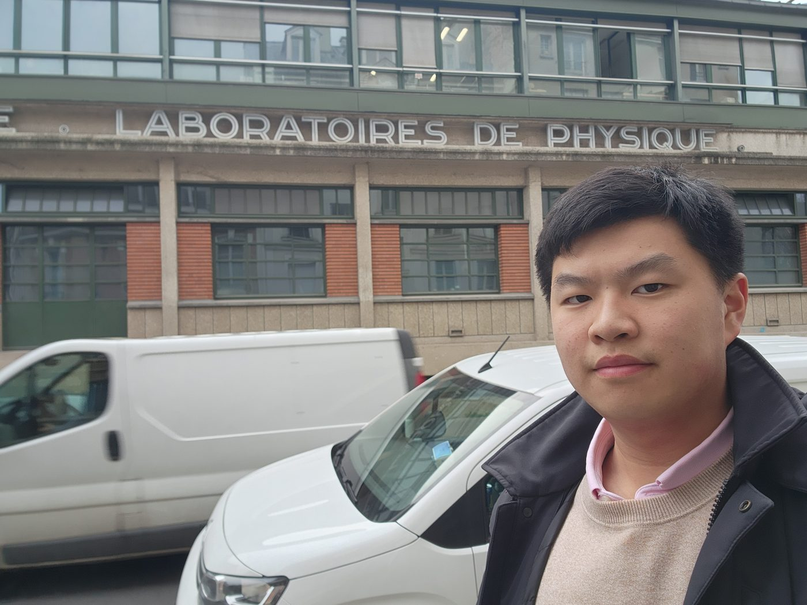

Edmond Sim
Physics student in Melbourne.
Hi. I'm Edmond. I'm doing a physics major at the University of Melbourne, after finishing school up in New South Wales.
Most of what I do at a computer lately is data analysis and a bit of machine learning in Python: pandas, NumPy, scikit-learn, and some PyTorch and TensorFlow when the problem calls for it. I also tutor high-school maths and physics, which is where the tutoring dashboard below came from. I'd like to end up somewhere that lets me use the quantitative side of all this.
Away from the screen I play trombone and piano, badly to moderately depending on the week, and spend a lot of time with friends.
Projects
-
Tutoring dashboard
A small web app for keeping track of which topics each student has got the hang of. Python/Flask API on the back, React and TypeScript on the front. Built because a spreadsheet stopped being enough.
-
N-body gravity simulator
A vectorised N-body simulator in MATLAB. Bodies attract each other, you pick an integrator (Euler, velocity Verlet, or RK4) and a scenario (binary star, planetary system, random galaxy) and watch it go. It started in Year 12 as a three-body Sun–Earth–Mars model to get past what HSC Module 5 covered, and grew from there.

-
Kaggle
Competitions and exploratory analysis on whatever dataset is interesting that month. Mostly cleaning, feature engineering, and seeing how far a sensible model gets.
-
2D acoustic ray tracer
Early days. The repository exists, the code mostly doesn't yet.
CV
Here's my CV as a PDF. Last updated 2025. If you'd like a different format, or it's out of date, email me.
Photos

Italy and France, February 2025. The physics building was a coincidence, mostly.
Elsewhere
- Email: edmond.sim1010@gmail.com
- GitHub: EdmondSim1010
- LinkedIn: edmond-sim
- Kaggle: edmondsim